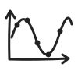

Physik · Q1
Wie schwingt ein Federpendel?
Am Federpendel kannst du Zeitgesetz, Kraft und Energie einer harmonischen Schwingung untersuchen.
Federpendel
4 Lernangebote VerstehenDas FederpendelAmplitude, Schwingungsdauer, Frequenz, Zeitgesetz und Energie im Überblick.Lektion öffnen ↗
VerstehenDas FederpendelAmplitude, Schwingungsdauer, Frequenz, Zeitgesetz und Energie im Überblick.Lektion öffnen ↗
 AnwendenFederpendel auswertenMarkiere Amplitude und Schwingungsdauer und berechne die Federkonstante.Übung öffnen ↗
AnwendenFederpendel auswertenMarkiere Amplitude und Schwingungsdauer und berechne die Federkonstante.Übung öffnen ↗
 Selbst lernenDas Zeitgesetz entdeckenWähle den Weg über deine Viana-Daten oder über eine einfache mathematische Überlegung.Lernpfad öffnen ↗
Selbst lernenDas Zeitgesetz entdeckenWähle den Weg über deine Viana-Daten oder über eine einfache mathematische Überlegung.Lernpfad öffnen ↗

Messdaten auswertenSinuskurven anpassenStelle Amplitude, Periode und Phase passend zu echten Messwerten ein.Lektion öffnen ↗